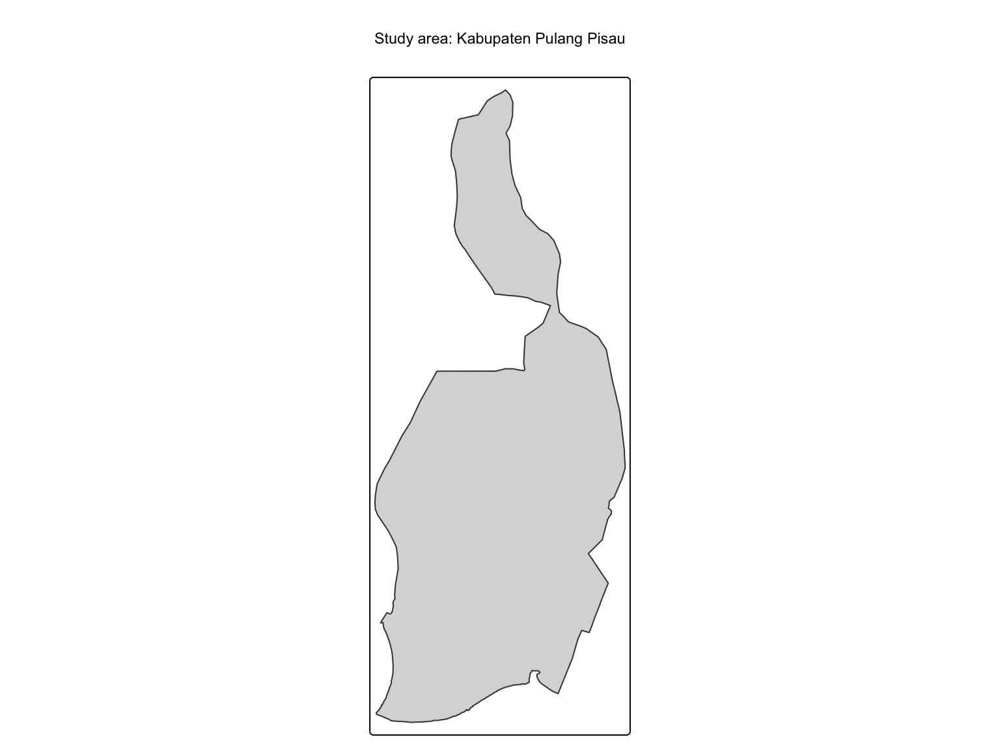
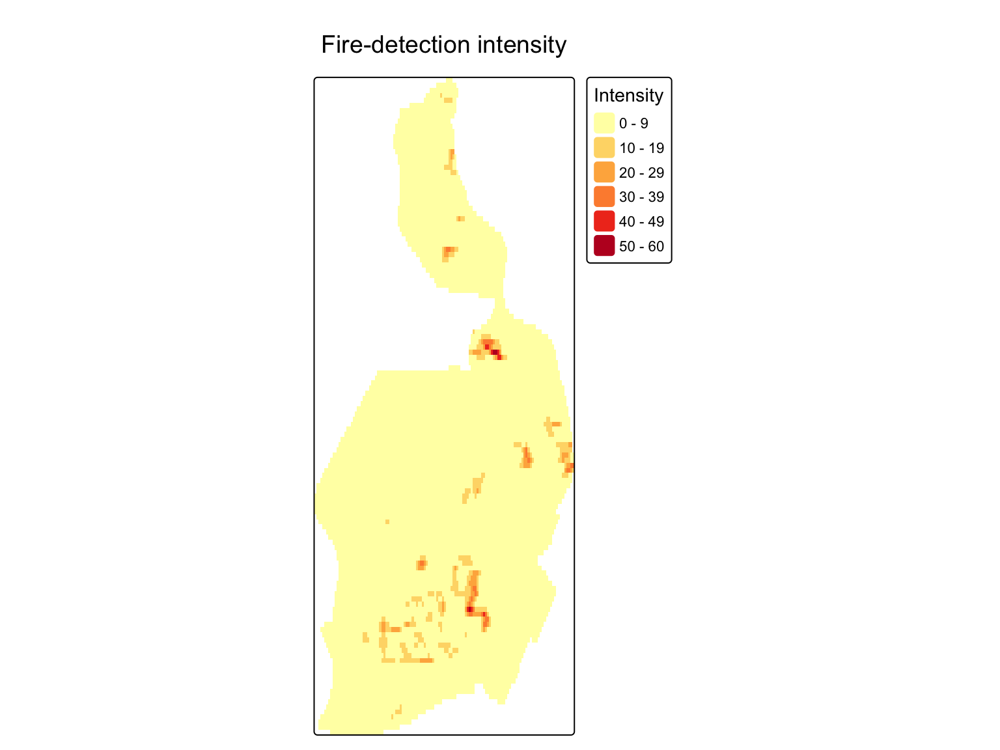
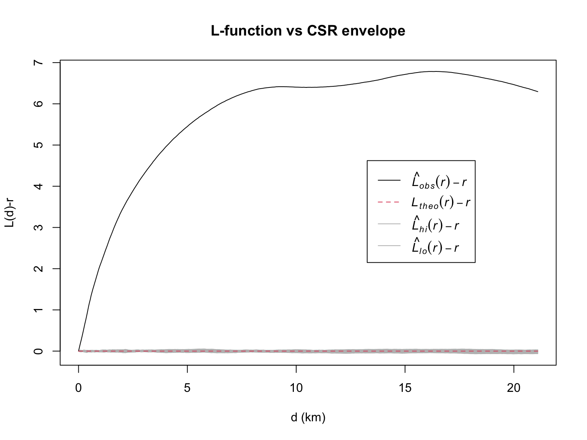
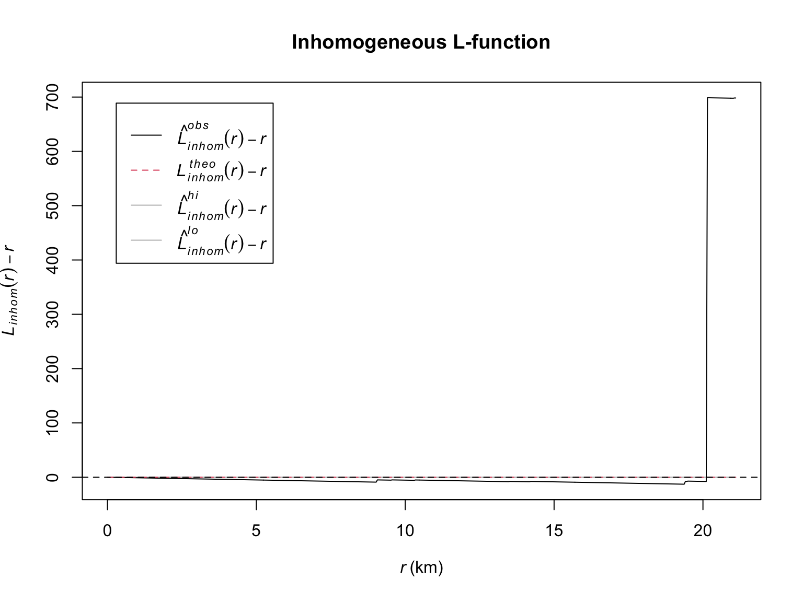
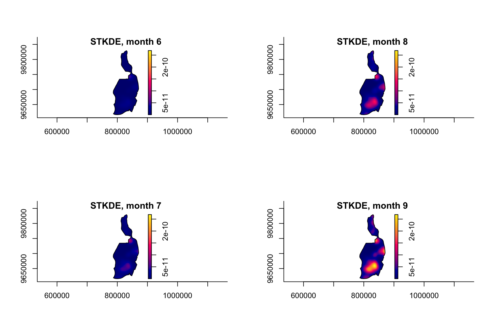

Take-home Exercise 1 · Executive Summary · Meng Xinyu · ISSS626
Peatland fires in Central Kalimantan cause haze, health and economic harm. This study asks two questions of the 2026 satellite record:
Study window: Kabupaten Pulang Pisau, a peat-dominated regency.

| Detections | NASA FIRMS VIIRS 375 m (NOAA-20), 1 Jan – 23 Sep 2026 |
| Boundary | GADM ADM2 (regency), UTM 49S (EPSG:32749) |
| Point event | one detection ≠ one fire → de-duplicated to one point per pixel per day |
| Cleaning | 370,354 → 351,822 national → 16,189 inside the regency |
A detection is not a distinct fire — repeated overpasses inflate apparent clustering, so de-duplication comes first.
Following the class workflow (r4gdsa Ch. 4–6):
| Question | Method | Compared against |
|---|---|---|
| Is it random? | Clark-Evans test | CSR (Monte Carlo) |
| Where is intensity? | Kernel density (KDE) | — |
| Do points interact? | G / F / K / L functions | homogeneous CSR |
| Robustness | Inhomogeneous L | inhomogeneous null |
| Timing | Spatio-temporal KDE (sparr) | — |

Clark-Evans R = 0.42 (p = 0.01) → clustered, not random.
The KDE hotspot sits in the central-south peatland, and is stable across all three bandwidths — the peak location does not depend on the smoothing choice.

The observed L-curve sits far above the CSR envelope across all scales up to ~20 km.
G, F, K and L all agree: the detections are significantly more clustered than a random pattern — the signature of fires concentrated in a few active areas.

The CSR test assumes constant intensity, which is false here. The inhomogeneous L lets intensity vary and re-tests.
Once intensity is allowed to vary, the curve drops back near the baseline.
Key result: the clustering mostly reflects first-order heterogeneity — fires concentrate because the conditions for fire concentrate — not fire-to-fire interaction.

The spatio-temporal KDE shows the hotspot stays in the central-south peatland but grows stronger as the dry season advances.
So timing matters as much as location — the same core is at risk, but the risk window concentrates in a few months.
First- and second-order evidence agree: a few peat-dominated areas drive the whole pattern.
Read with care
From evidence to action
Directly supported: spatial concentration + timing. Needs more data: causation, who is exposed.
ISSS626 · Take-home Ex1 · Meng Xinyu